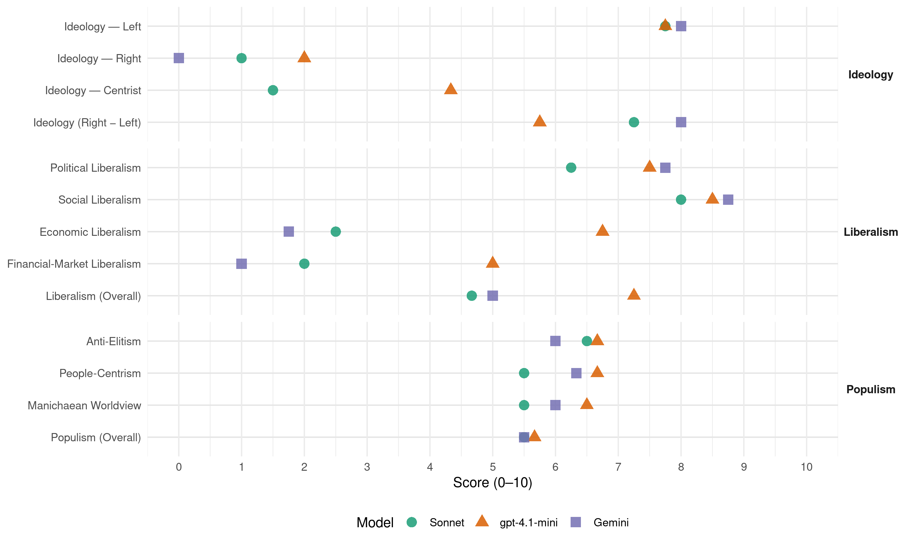

BE (Portugal, 2019)
manifesto_id 35211_201910
Get full text: This site shows derived annotations and short verbatim quotes only. The full manifesto text is © Manifesto Project / WZB — obtain it via manifesto-project.wzb.eu using the manifesto_id above.
Headline scores
| Dimension | Sonnet | gpt-4.1-mini | Gemini |
|---|---|---|---|
| Populism (Overall) | 5.5 | 5.7 | 5.5 |
| Anti-Elitism | 6.5 | 6.7 | 6.0 |
| People-Centrism | 5.5 | 6.7 | 6.3 |
| Manichaean Worldview | 5.5 | 6.5 | 6.0 |
| Ideology (Right − Left) | 7.2 | 5.8 | 8.0 |
| Liberalism (Overall) | 4.7 | 7.2 | 5.0 |
| Political Liberalism | 6.2 | 7.5 | 7.8 |
| Social Liberalism | 8.0 | 8.5 | 8.8 |
| Economic Liberalism | 2.5 | 6.8 | 1.8 |
| Financial-Market Liberalism | 2.0 | 5.0 | 1.0 |
Evidence per dimension
Economic Liberalism
Gemini · score 2.0 · verified · chunk 1
“reverter as privatizações de empresas estratégicas”
Reverter as privatizações de empresas estratégicas para o país Uma banca pública e estratégica
Gemini · score 1.0 · verified · chunk 2
“reverter as privatizações de empresas estratégicas”
O Bloco tem como prioridade a recuperação do controlo público sobre a banca e sobre empresas estratégicas nos transportes e energia. O programa de reversão das privatizações
Gemini · score 2.0 · verified · chunk 3
“ideologia neoliberal contaminou a Educação com”
3.4.1.Uma escola inclusiva, moderna e democrática O problema A ideologia neoliberal contaminou a Educação com a linguagem e o pensamento da gestão e da economia
Gemini · score 2.0 · verified · chunk 4
“controlo público dos setores estratégicos”
Um programa financiado por uma economia mais justa, com controlo público dos setores estratégicos e que cria emprego
gpt-4.1-mini · score 8.0 · verified · chunk 1
“reconversão industrial e de pleno emprego, que enfrenta as alterações climáticas”
Outra ideia de Portugal é a do Bloco de Esquerda: uma democracia económica para toda a gente, que reduz a desigualdade, que empreende uma estratégia de reconversão industrial e de pleno emprego, que enfrenta as alterações climáticas e transforma a vida nas cidades.
gpt-4.1-mini · score 7.0 · verified · chunk 2
“reposição dos níveis de investimento público no patamar anual dos 5% do PIB”
Essas são as nossas prioridades. Para as cumprirmos, as medidas que adiante detalhamos criarão cerca de duzentos e cinquenta mil novos empregos qualificados. Estas prioridades têm um custo, que é a reposição dos níveis de investimento público no patamar anual dos 5% do PIB, o que agora corresponde a dez mil milhões de euros e equivale à percentagem que chegou a ser alcançada em alguns dos anos anteriores, quando a austeridade não tinha sido imposta para o empobrecimento de Portugal.
gpt-4.1-mini · score 6.0 · verified · chunk 3
“mercado, competição, negócio, investimento, privatização, regulação, impostos”
A recuperação de rendimentos e a criação de emprego permitiu equilibrar o sistema previdencial de Segurança Social: a receita de contribuições é hoje superior à despesa com pensões do sistema previdencial. Mas o sistema enfrenta desafios, resultantes nomeadamente das mudanças da estrutura demográfica e das transformações na estrutura de produção (robotização, aumento de produtividade).
gpt-4.1-mini · score 6.0 · verified · chunk 4
“Aumento do Salário Mínimo Nacional e harmonização do salário mínimo do setor privado com o setor público”
Aumento do Salário Mínimo Nacional e harmonização do salário mínimo do setor privado com o setor público Combate à precariedade, restringindo a utilização dos contratos a prazo Definição de leques salariais de referência Relançamento da contratação coletiva.
Sonnet · score 2.0 · verified · chunk 1
“Reverter as privatizações de empresas estratégicas”
Reverter as privatizações de empresas estratégicas para o país; Uma banca pública e estratégica; controlo público dos setores estratégicos
Sonnet · score 2.0 · verified · chunk 2
“reversão das privatizações de empresas estratégicas”
O Bloco tem como prioridade a recuperação do controlo público sobre a banca e sobre empresas estratégicas nos transportes e energia. O programa de reversão das privatizações
Sonnet · score 3.0 · verified · chunk 3
“agenda neoliberal e pela racionalidade instrumental”
O sistema educativo em Portugal tornou-se numa imensa manta de retalhos, avulsa e incoerente marcado pela agenda neoliberal e pela racionalidade instrumental da Educação
Sonnet · score 3.0 · verified · chunk 4
“controlo público dos setores estratégicos”
por uma economia mais justa, com controlo público dos setores estratégicos e que cria emprego
Financial-Market Liberalism
Gemini · score 1.0 · verified · chunk 1
“fechar a porta aos fundos imobiliários”
arrendamento acessível e política social Fechar a porta aos fundos imobiliários Eliminar os resquícios da Lei Cristas
Gemini · score 1.0 · verified · chunk 2
“nacionalização do sistema bancário”
é por esta razão que o Bloco de Esquerda defende a nacionalização do sistema bancário e a sua recuperação como serviço público.
Gemini · score 1.0 · verified · chunk 4
“sistema financeiro sempre salvo com dinheiros públicos”
os poderes ocultos dos “donos disto tudo” num sistema financeiro sempre salvo com dinheiros públicos, são os exemplos da nossa desgraça
gpt-4.1-mini · score 7.0 · verified · chunk 1
“recuperação da propriedade pública de bens estratégicos na economia”
E só essa força dará ao povo a garantia de que, diante da tensão entre estas metas e o cumprimento obediente das regras europeias, serão os direitos das pessoas que prevalecerão.
gpt-4.1-mini · score 3.0 · verified · chunk 2
“os fundos imobiliários são veículos de aplicações financeiras”
Os fundos imobiliários são veículos de aplicações financeiras que têm sido muito ativos em Portugal nos últimos anos, comprando prédios e adquirindo posições. Todos os efeitos desta atividade são nocivos: aumenta o preço das casas, criando uma procura inflacionada, impede ou dificulta o exercício dos direitos dos inquilinos, cria um stock de prédios desocupados e que só servem como reserva de valor.
Sonnet · score 2.0 · verified · chunk 1
“Uma banca pública e estratégica”
Reverter as privatizações de empresas estratégicas para o país; Uma banca pública e estratégica; Fechar a porta aos fundos imobiliários
Sonnet · score 1.0 · verified · chunk 2
“nacionalização do sistema bancário”
É por esta razão que o Bloco de Esquerda defende a nacionalização do sistema bancário e a sua recuperação como serviço público.
Sonnet · score 3.0 · verified · chunk 3
“capitalização de uma parte dos sistemas que deveria migrar para o negócio privado”
As propostas da direita para a Segurança Social continuam a ser os cortes nas pensões, a compressão da proteção social, a descapitalização por via de descontos às empresas, o modelo de baixos salários e a capitalização de uma parte dos sistemas que deveria migrar para o negócio privado
Sonnet · score 2.0 · verified · chunk 4
“processos de nacionalização, recapitalização, resgate, resolução”
Autonomia total do país na tomada de decisões sobre o sistema financeiro, incluindo processos de nacionalização, recapitalização, resgate, resolução ou venda
Political Liberalism
Gemini · score 8.0 · verified · chunk 1
“comprometida com a democracia e uma política socialista”
empenho em formar uma maioria comprometida com a democracia e uma política socialista ao serviço de quem está mais desprotegido
Gemini · score 7.0 · verified · chunk 2
“retira soberania aos Estados nacionais”
instituições europeias têm promovido ativamente um quadro legal que retira soberania aos Estados nacionais com o objetivo de promover
Gemini · score 8.0 · verified · chunk 3
“escrutínio democrático da aplicação da justiça”
necessário insistir na formação de magistrados, assim como o escrutínio democrático da aplicação da justiça, porque os tribunais precisam de ser reconhecidos como
Gemini · score 8.0 · verified · chunk 4
“defesa que qualifica e protege a Democracia”
A corrupção mina as bases da confiança num Estado de Direito. A transparência é a defesa que qualifica e protege a Democracia.
gpt-4.1-mini · score 8.0 · verified · chunk 1
“garantindo aos seus eleitores e eleitoras o seu empenho em formar uma maioria comprometida com a democracia”
Democratizar a economia para vivermos sem medo, proteger o emprego, criar habitação acessível, salvar o Serviço Nacional de Saúde, garantir o respeito e contrariar os preconceitos, é assim que a esquerda se apresenta, garantindo aos seus eleitores e eleitoras o seu empenho em formar uma maioria comprometida com a democracia e uma política socialista ao serviço de quem está mais desprotegido.
gpt-4.1-mini · score 7.0 · verified · chunk 2
“uma democracia económica para toda a gente”
Outra ideia de Portugal é a do Bloco de Esquerda: uma democracia económica para toda a gente, que reduz a desigualdade, que empreende uma estratégia de reconversão industrial e de pleno emprego, que enfrenta as alterações climáticas e transforma a vida nas cidades.
gpt-4.1-mini · score 7.0 · verified · chunk 3
“democracia, direitos, eleições, tribunais, media, governo, parlamento”
A noção de que a Uber em Londres é um mosaico de 30 mil pequenas empresas ligadas a uma plataforma comum é ridícula. Os condutores não negoceiam, nem têm o poder de negociar com os passageiros. Oferecem-se e aceitam-se viagens nos termos estritamente decididos pela Uber.
gpt-4.1-mini · score 8.0 · verified · chunk 4
“gratuidade no acesso, através de uma política de apoio judiciário capaz de garantir a efetiva universalidade do acesso aos tribunais”
É preciso traduzir também na Justiça a centralidade dos serviços públicos de que se faz o nosso modelo constitucional de democracia. Para esse efeito, o Bloco de Esquerda proporá uma Lei de Bases da Justiça que terá no Serviço Nacional de Justiça o seu elemento central.
Sonnet · score 6.0 · verified · chunk 1
“comprometida com a democracia”
garantindo aos seus eleitores e eleitoras o seu empenho em formar uma maioria comprometida com a democracia e uma política socialista
Sonnet · score 5.0 · verified · chunk 2
“debate no Parlamento, com as principais linhas orientadoras”
Elaboração de um programa estratégico, a debater no Parlamento, com as principais linhas orientadoras da atuação da banca pública.
Sonnet · score 7.0 · verified · chunk 3
“Uma sociedade democrática não pode aceitar”
Esse país patriarcal exprime-se cruamente na justiça machista. Uma sociedade democrática não pode aceitar que os preconceitos moldem as acusações e as sentenças nos tribunais
Sonnet · score 7.0 · verified · chunk 4
“A transparência é a defesa que qualifica e protege a Democracia”
A corrupção mina as bases da confiança num Estado de Direito. A transparência é a defesa que qualifica e protege a Democracia.
Liberalism (Overall)
Gemini · score 5.0 · verified · chunk 1
“comprometida com a democracia e uma política socialista”
empenho em formar uma maioria comprometida com a democracia e uma política socialista ao serviço de quem está mais desprotegido
Gemini · score 4.0 · verified · chunk 2
“nacionalização do sistema bancário”
é por esta razão que o Bloco de Esquerda defende a nacionalização do sistema bancário e a sua recuperação como serviço público.
Gemini · score 6.0 · verified · chunk 3
“escrutínio democrático da aplicação da justiça”
necessário insistir na formação de magistrados, assim como o escrutínio democrático da aplicação da justiça, porque os tribunais precisam de ser reconhecidos como
Gemini · score 5.0 · verified · chunk 4
“defesa que qualifica e protege a Democracia”
A corrupção mina as bases da confiança num Estado de Direito. A transparência é a defesa que qualifica e protege a Democracia.
gpt-4.1-mini · score 8.0 · verified · chunk 1
“garantindo aos seus eleitores e eleitoras o seu empenho em formar uma maioria comprometida com a democracia”
Democratizar a economia para vivermos sem medo, proteger o emprego, criar habitação acessível, salvar o Serviço Nacional de Saúde, garantir o respeito e contrariar os preconceitos, é assim que a esquerda se apresenta, garantindo aos seus eleitores e eleitoras o seu empenho em formar uma maioria comprometida com a democracia e uma política socialista ao serviço de quem está mais desprotegido.
gpt-4.1-mini · score 6.0 · verified · chunk 2
“uma democracia económica para toda a gente, que reduz a desigualdade”
Outra ideia de Portugal é a do Bloco de Esquerda: uma democracia económica para toda a gente, que reduz a desigualdade, que empreende uma estratégia de reconversão industrial e de pleno emprego, que enfrenta as alterações climáticas e transforma a vida nas cidades.
gpt-4.1-mini · score 7.0 · verified · chunk 3
“direitos, minorias, igualdade, discriminação, género/LGBTQ+, raça, religião”
Quando as mulheres, que são 53% da população, são tratadas como minoria social, o país patriarcal revela-se em todo o seu esplendor. Esse país patriarcal exprime-se cruamente na justiça machista. Uma sociedade democrática não pode aceitar que os preconceitos moldem as acusações e as sentenças nos tribunais.
gpt-4.1-mini · score 8.0 · verified · chunk 4
“gratuidade no acesso, através de uma política de apoio judiciário capaz de garantir a efetiva universalidade do acesso aos tribunais”
É preciso traduzir também na Justiça a centralidade dos serviços públicos de que se faz o nosso modelo constitucional de democracia. Para esse efeito, o Bloco de Esquerda proporá uma Lei de Bases da Justiça que terá no Serviço Nacional de Justiça o seu elemento central.
Sonnet · score 5.0 · verified · chunk 1
“democracia e uma política socialista”
maioria comprometida com a democracia e uma política socialista ao serviço de quem está mais desprotegido
Sonnet · score 4.0 · verified · chunk 2
“controlo democrático do sistema financeiro”
A transformação de um modelo económico que alia a financeirização às desigualdades e à destruição ambiental requer o controlo democrático do sistema financeiro.
Sonnet · score 5.0 · verified · chunk 3
“Separação clara entre público e privado”
Separação clara entre público e privado. Fazer uma separação entre setores, estabelecendo que não há gestão privada de unidades inseridas no SNS
Sonnet · score 5.0 · mixed · chunk 4
“democracia soberana”
o Bloco mantém a sua defesa da democracia soberana, tornando claro que, se o país for colocado perante um ultimato das instituições europeias
Anti-Elitism
Gemini · score 6.0 · verified · chunk 1
“romper com o modelo de saque do erário público”
uma nova estratégia de acessibilidade rodoviária que rompa com o modelo de saque do erário público e do bolso dos portugueses
Gemini · score 7.0 · verified · chunk 2
“oferecido aos interesses bancários e às rendas financeiras”
Com esta ideia, Portugal está a ser oferecido aos interesses bancários e às rendas financeiras. Outra ideia de Portugal
Gemini · score 4.0 · verified · chunk 3
“bloqueio. Defenderá a aplicação da proposta”
Na próxima legislatura, o Bloco de Esquerda propõe-se superar esse bloqueio. Defenderá a aplicação da proposta dos sindicatos, a consideração ao longo de uma
Gemini · score 7.0 · verified · chunk 4
“os poderes ocultos dos”donos disto tudo”“
concursos públicos feitos à medida de um determinado privado, os poderes ocultos dos “donos disto tudo” num sistema financeiro sempre salvo com dinheiros públicos
gpt-4.1-mini · score 8.0 · verified · chunk 1
“O sistema financeiro que delapida o Estado Social”
// O sistema financeiro que delapida o Estado Social, a especulação financeira que nega o direito à habitação, a desregulação laboral que aumenta horários de trabalho e comprime salários, a fúria extrativista que ameaça a vida na Terra. // As pessoas refugiadas por razões climáticas já superam as que o são por motivos relacionados com as guerras.
gpt-4.1-mini · score 8.0 · verified · chunk 2
“um administrador pode ganhar em cada mês o equivalente a dez anos do salário médio”
…uma sociedade agressivamente desigual, em que há quase quatro milhões de pobres mas um administrador pode ganhar em cada mês o equivalente a dez anos do salário médio da sua empresa, como na Jerónimo Martins: ao fim do ano, o presidente da empresa recebe o mesmo que um funcionário ou funcionária ganharia em 140 anos de trabalho. Com esta ideia, Portugal está a ser oferecido aos interesses bancários e às rendas financeiras.
gpt-4.1-mini · score 4.0 · verified · chunk 3
“o ‘modelo de negócios’ baseado nas plataformas como a Uber”
O ‘modelo de negócios’ baseado nas plataformas como a Uber, a Cabify, a Uber Eats ou a Glovo poderosas empresas multinacionais procura escapar a quaisquer responsabilidades diretas no plano contratual, quer quanto a contratos de trabalho, quer quanto a contratos de prestação de serviços, escapando também a quaisquer responsabilidades no campo da segurança social e da segurança e saúde no trabalho.
gpt-4.1-mini · score 5.0 · mixed · chunk 4
“combate à corrupção”
O Bloco de Esquerda considera o combate à corrupção uma prioridade. A corrupção mina as bases da confiança num Estado de Direito. A transparência é a defesa que qualifica e protege a Democracia.
Sonnet · score 7.0 · verified · chunk 1
“O sistema financeiro que delapida o Estado Social”
As várias crises que vivemos têm um nome: capitalismo. // O sistema financeiro que delapida o Estado Social, a especulação financeira que nega o direito à habitação
Sonnet · score 7.0 · verified · chunk 2
“Portugal está a ser oferecido aos interesses bancários e às rendas financeiras”
É uma sociedade agressivamente desigual, em que há quase quatro milhões de pobres… Com esta ideia, Portugal está a ser oferecido aos interesses bancários e às rendas financeiras.
Sonnet · score 5.0 · verified · chunk 3
“poderosas empresas multinacionais procura escapar”
O ‘modelo de negócios’ baseado nas plataformas como a Uber, a Cabify, a Uber Eats ou a Glovo poderosas empresas multinacionais procura escapar a quaisquer responsabilidades diretas
Sonnet · score 7.0 · verified · chunk 4
“banqueiros e os seus amigos que saquearam os bancos”
Foi assim que revelámos quem foram os banqueiros e os seus amigos que saquearam os bancos e exigiram que o povo pagasse a conta
Ideology — Centrist
gpt-4.1-mini · score 6.0 · verified · chunk 1
“uma democracia económica para toda a gente”
Outra ideia de Portugal é a do Bloco de Esquerda: uma democracia económica para toda a gente, que reduz a desigualdade, que empreende uma estratégia de reconversão industrial e de pleno emprego, que enfrenta as alterações climáticas e transforma a vida nas cidades.
gpt-4.1-mini · score 3.0 · verified · chunk 2
“Uma ideia é a da direita e do centro”
Uma ideia é a da direita e do centro: um país pequenino, subjugado pelas imposições de Bruxelas, que prefere cortar as pensões das pessoas idosas quando escolhe pagar os prejuízos financeiros.
gpt-4.1-mini · score 4.0 · verified · chunk 4
“defender os de baixo, quem é explorado”
Foi assim que defendemos os de baixo, quem é explorado e quem paga os impostos sobre o trabalho, foi assim que conseguirmos passes sociais mais baratos, livros escolares gratuitos ou a tarifa social na eletricidade para tanta gente.
Sonnet · score 1.0 · verified · chunk 1
“uma esquerda forte e determinada”
o Bloco apresenta uma esquerda forte e determinada em não perder tempo
Sonnet · score 2.0 · verified · chunk 2
“democracia económica para toda a gente”
Outra ideia de Portugal é a do Bloco de Esquerda: uma democracia económica para toda a gente, que reduz a desigualdade
Sonnet · score 1.0 · verified · chunk 3
“a ação da esquerda”
A existência de 1,7 milhões de cidadãos e cidadãs em situação de pobreza é um facto que ofende o país e que motiva a ação da esquerda
Sonnet · score 2.0 · verified · chunk 4
“consenso centrista se afigura mais blindado”
a política externa é porventura aquela em que o consenso centrista se afigura mais blindado
Ideology — Left
Gemini · score 8.0 · verified · chunk 1
“uma democracia económica para toda a gente”
Outra ideia de Portugal é a do Bloco de Esquerda: uma democracia económica para toda a gente, que reduz a desigualdade
Gemini · score 8.0 · verified · chunk 2
“uma democracia económica para toda a gente, que reduz a desigualdade”
Outra ideia de Portugal é a do Bloco de Esquerda: uma democracia económica para toda a gente, que reduz a desigualdade, que empreende uma estratégia
Gemini · score 8.0 · verified · chunk 3
“combate à informalidade e precariedade do”
o equilíbrio do sistema deve passar ainda pelo combate à informalidade e precariedade do emprego e pela melhoria dos salários, que são
Gemini · score 8.0 · verified · chunk 4
“construção anticapitalista mais ampla”
Fazemo-lo integrando a luta pelo respeito do bem-estar animal numa construção anticapitalista mais ampla, isto é, uma construção que combate a exploração
gpt-4.1-mini · score 9.0 · verified · chunk 1
“uma democracia económica para toda a gente, que reduz a desigualdade”
Outra ideia de Portugal é a do Bloco de Esquerda: uma democracia económica para toda a gente, que reduz a desigualdade, que empreende uma estratégia de reconversão industrial e de pleno emprego, que enfrenta as alterações climáticas e transforma a vida nas cidades.
gpt-4.1-mini · score 9.0 · verified · chunk 2
“uma democracia económica para toda a gente, que reduz a desigualdade”
Outra ideia de Portugal é a do Bloco de Esquerda: uma democracia económica para toda a gente, que reduz a desigualdade, que empreende uma estratégia de reconversão industrial e de pleno emprego, que enfrenta as alterações climáticas e transforma a vida nas cidades.
gpt-4.1-mini · score 6.0 · verified · chunk 3
“combate à precariedade, restringindo a utilização dos contratos a prazo”
Aumento do Salário Mínimo Nacional e harmonização do salário mínimo do setor privado com o setor público Combate à precariedade, restringindo a utilização dos contratos a prazo Definição de leques salariais de referência Relançamento da contratação coletiva Relançamento da contratação coletiva Adoção de uma nova lei de combate ao trabalho temporário e ao falso outsourcing Revisão da tabela remuneratória da Administração Pública
gpt-4.1-mini · score 7.0 · verified · chunk 4
“combate à precariedade, restringindo a utilização dos contratos a prazo”
Aumento do Salário Mínimo Nacional e harmonização do salário mínimo do setor privado com o setor público Combate à precariedade, restringindo a utilização dos contratos a prazo Definição de leques salariais de referência Relançamento da contratação coletiva.
Sonnet · score 8.0 · verified · chunk 1
“Reverter as privatizações de empresas estratégicas”
Reverter as privatizações de empresas estratégicas para o país; Uma banca pública e estratégica
Sonnet · score 8.0 · verified · chunk 2
“nacionalização do sistema bancário e a sua recuperação como serviço público”
É por esta razão que o Bloco de Esquerda defende a nacionalização do sistema bancário e a sua recuperação como serviço público.
Sonnet · score 7.0 · verified · chunk 3
“combate à precariedade do emprego e pela melhoria dos salários”
o equilíbrio do sistema deve passar ainda pelo combate à informalidade e precariedade do emprego e pela melhoria dos salários, que são fatores cruciais
Sonnet · score 8.0 · verified · chunk 4
“uma economia a favor das pessoas era possível”
demonstração que a austeridade não era a solução e que a alternativa uma economia a favor das pessoas era possível
Ideology (Right − Left)
Gemini · score 8.0 · verified · chunk 1
“uma democracia económica para toda a gente”
Outra ideia de Portugal é a do Bloco de Esquerda: uma democracia económica para toda a gente, que reduz a desigualdade
Gemini · score 8.0 · verified · chunk 2
“uma democracia económica para toda a gente, que reduz a desigualdade”
Outra ideia de Portugal é a do Bloco de Esquerda: uma democracia económica para toda a gente, que reduz a desigualdade, que empreende uma estratégia
Gemini · score 8.0 · verified · chunk 3
“combate à informalidade e precariedade do”
o equilíbrio do sistema deve passar ainda pelo combate à informalidade e precariedade do emprego e pela melhoria dos salários, que são
Gemini · score 8.0 · verified · chunk 4
“construção anticapitalista mais ampla”
Fazemo-lo integrando a luta pelo respeito do bem-estar animal numa construção anticapitalista mais ampla, isto é, uma construção que combate a exploração
gpt-4.1-mini · score 7.0 · verified · chunk 1
“uma democracia económica para toda a gente, que reduz a desigualdade”
Outra ideia de Portugal é a do Bloco de Esquerda: uma democracia económica para toda a gente, que reduz a desigualdade, que empreende uma estratégia de reconversão industrial e de pleno emprego, que enfrenta as alterações climáticas e transforma a vida nas cidades.
gpt-4.1-mini · score 6.0 · verified · chunk 2
“uma democracia económica para toda a gente, que reduz a desigualdade”
Outra ideia de Portugal é a do Bloco de Esquerda: uma democracia económica para toda a gente, que reduz a desigualdade, que empreende uma estratégia de reconversão industrial e de pleno emprego, que enfrenta as alterações climáticas e transforma a vida nas cidades.
gpt-4.1-mini · score 5.0 · verified · chunk 3
“combate à precariedade, restringindo a utilização dos contratos a prazo”
Aumento do Salário Mínimo Nacional e harmonização do salário mínimo do setor privado com o setor público Combate à precariedade, restringindo a utilização dos contratos a prazo Definição de leques salariais de referência Relançamento da contratação coletiva Relançamento da contratação coletiva Adoção de uma nova lei de combate ao trabalho temporário e ao falso outsourcing Revisão da tabela remuneratória da Administração Pública
gpt-4.1-mini · score 5.0 · verified · chunk 4
“combate à precariedade, restringindo a utilização dos contratos a prazo”
Aumento do Salário Mínimo Nacional e harmonização do salário mínimo do setor privado com o setor público Combate à precariedade, restringindo a utilização dos contratos a prazo Definição de leques salariais de referência Relançamento da contratação coletiva.
Sonnet · score 8.0 · verified · chunk 1
“política socialista ao serviço de quem está mais desprotegido”
garantindo aos seus eleitores e eleitoras o seu empenho em formar uma maioria comprometida com a democracia e uma política socialista ao serviço de quem está mais desprotegido
Sonnet · score 8.0 · verified · chunk 2
“renacionalização da EDP e da Galp são objetivos de soberania económica”
A renacionalização da EDP e da Galp são objetivos de soberania económica do país
Sonnet · score 6.0 · verified · chunk 3
“O aumento dos salários e a contribuição por parte das grandes empresas”
O aumento dos salários e a contribuição por parte das grandes empresas também em função do seu valor acrescentado líquido é o caminho que a esquerda deve seguir
Sonnet · score 7.0 · verified · chunk 4
“construção anticapitalista mais ampla”
Fazemo-lo integrando a luta pelo respeito do bem-estar animal numa construção anticapitalista mais ampla
Ideology — Right
Gemini · score 0.0 · verified · chunk 4
“combater o racismo estrutural”
4 DIREITOS FORTES CONTRA O CONSERVADORISMO E O PRECONCEITO A.Não dar tréguas ao preconceito 4.1.Combater o racismo estrutural
gpt-4.1-mini · score 2.0 · verified · chunk 2
“um país pequenino, subjugado pelas imposições de Bruxelas”
Uma ideia é a da direita e do centro: um país pequenino, subjugado pelas imposições de Bruxelas, que prefere cortar as pensões das pessoas idosas quando escolhe pagar os prejuízos financeiros.
gpt-4.1-mini · score 2.0 · verified · chunk 4
“fim dos despejos e demolições forçados em territórios com forte presença de pessoas e comunidades africanas”
Fim dos despejos e demolições forçados em territórios com forte presença de pessoas e comunidades africanas, afrodescendentes e ciganas, sem a existência de uma alternativa de habitação digna.
Sonnet · score 1.0 · verified · chunk 1
“acolhendo quem venha de outros países”
convidando ao regresso de quem partiu, acolhendo quem venha de outros países com uma legislação laboral capaz de promover emprego e salários
Sonnet · score 1.0 · verified · chunk 2
“soberania e segurança energética”
É um erro político e um atentado contra a soberania e segurança energética deixar este monopólio nacional nas mãos de multinacionais, Estados estrangeiros
Sonnet · score 1.0 · verified · chunk 3
“fim da presença norte-americana na Base das Lajes”
Para a Região Autónoma dos Açores, o Bloco propõe ainda: Fim da presença norte-americana na Base das Lajes
Sonnet · score 1.0 · verified · chunk 4
“nova filosofia humanista e aberta ao mundo”
nova filosofia humanista e aberta ao mundo, em rutura com as orientações da “Europa fortaleza”
Manichaean Worldview
Gemini · score 6.0 · verified · chunk 1
“uma estratégia brutal de acumulação e de concentração”
“Crise” e “austeridade” foram os nomes da estratégia brutal de acumulação e de concentração da riqueza em Portugal
Gemini · score 6.0 · verified · chunk 2
“Nestas eleições estão em confronto duas ideias”
2 A ECONOMIA PARA TODA A GENTE Nestas eleições estão em confronto duas ideias de Portugal. Uma ideia é a da direita
Gemini · score 6.0 · verified · chunk 4
“maioria absoluta é o pântano”
A maioria absoluta é o pântano onde a corrupção se esconde, os abusos fiscais se multiplicam
gpt-4.1-mini · score 7.0 · verified · chunk 1
“O sistema financeiro que delapida o Estado Social”
// O sistema financeiro que delapida o Estado Social, a especulação financeira que nega o direito à habitação, a desregulação laboral que aumenta horários de trabalho e comprime salários, a fúria extrativista que ameaça a vida na Terra. // As pessoas refugiadas por razões climáticas já superam as que o são por motivos relacionados com as guerras.
gpt-4.1-mini · score 6.0 · verified · chunk 2
“um país pequenino, subjugado pelas imposições de Bruxelas”
Uma ideia é a da direita e do centro: um país pequenino, subjugado pelas imposições de Bruxelas, que prefere cortar as pensões das pessoas idosas quando escolhe pagar os prejuízos financeiros.
gpt-4.1-mini · score 4.0 · mixed · chunk 4
“os banqueiros e os seus amigos que saquearam os bancos”
Foi assim que revelámos quem foram os banqueiros e os seus amigos que saquearam os bancos e exigiram que o povo pagasse a conta, e os governantes que os ajudaram ou fecharam os olhos.
Sonnet · score 6.0 · verified · chunk 1
“estratégia brutal de acumulação e de concentração da riqueza”
“Crise” e “austeridade” foram os nomes da estratégia brutal de acumulação e de concentração da riqueza em Portugal e na Europa
Sonnet · score 6.0 · verified · chunk 2
“Nestas eleições estão em confronto duas ideias de Portugal”
Nestas eleições estão em confronto duas ideias de Portugal. Uma ideia é a da direita e do centro: um país pequenino, subjugado pelas imposições de Bruxelas
Sonnet · score 4.0 · verified · chunk 3
“a política de cortes nas pensões”
é a política de criação de emprego e diversificação de fontes de financiamento que garantem a sustentabilidade do sistema, e não a política de cortes nas pensões e nas prestações sociais
Sonnet · score 6.0 · verified · chunk 4
“PS e a direita uniram-se contra as mudanças”
PS e a direita uniram-se contra as mudanças de fundo que o país precisava, impedindo o alargamento do período de nojo
People-Centrism
Gemini · score 7.0 · verified · chunk 1
“ao serviço de quem vive e trabalha em Portugal”
por via de uma gestão das contas públicas ao serviço de quem vive e trabalha em Portugal, do imposto sobre as fortunas
Gemini · score 6.0 · verified · chunk 2
“democracia económica para toda a gente”
Outra ideia de Portugal é a do Bloco de Esquerda: uma democracia económica para toda a gente, que reduz a desigualdade
Gemini · score 6.0 · verified · chunk 4
“compromisso com o povo”
Mostra o que queremos e o nosso compromisso com o povo. Indica as nossas prioridades.
gpt-4.1-mini · score 7.0 · verified · chunk 1
“uma democracia económica para toda a gente”
Outra ideia de Portugal é a do Bloco de Esquerda: uma democracia económica para toda a gente, que reduz a desigualdade, que empreende uma estratégia de reconversão industrial e de pleno emprego, que enfrenta as alterações climáticas e transforma a vida nas cidades.
gpt-4.1-mini · score 7.0 · verified · chunk 2
“uma democracia económica para toda a gente, que reduz a desigualdade”
Outra ideia de Portugal é a do Bloco de Esquerda: uma democracia económica para toda a gente, que reduz a desigualdade, que empreende uma estratégia de reconversão industrial e de pleno emprego, que enfrenta as alterações climáticas e transforma a vida nas cidades.
gpt-4.1-mini · score 6.0 · verified · chunk 4
“defender os de baixo, quem é explorado”
Foi assim que defendemos os de baixo, quem é explorado e quem paga os impostos sobre o trabalho, foi assim que conseguirmos passes sociais mais baratos, livros escolares gratuitos ou a tarifa social na eletricidade para tanta gente.
Sonnet · score 6.0 · verified · chunk 1
“uma democracia económica para toda a gente”
Outra ideia de Portugal é a do Bloco de Esquerda: uma democracia económica para toda a gente, que reduz a desigualdade
Sonnet · score 6.0 · verified · chunk 2
“uma democracia económica para toda a gente”
Outra ideia de Portugal é a do Bloco de Esquerda: uma democracia económica para toda a gente, que reduz a desigualdade, que empreende uma estratégia de reconversão industrial
Sonnet · score 4.0 · verified · chunk 3
“direito a um salário decente”
as autoridades municipais introduziram uma remuneração/hora mínima de cerca de 15 euros para garantir o direito a um salário decente
Sonnet · score 6.0 · verified · chunk 4
“o nosso compromisso com o povo”
Mostra o que queremos e o nosso compromisso com o povo. Indica as nossas prioridades.
Populism (Overall)
Gemini · score 6.0 · verified · chunk 1
“ao serviço de quem vive e trabalha em Portugal”
por via de uma gestão das contas públicas ao serviço de quem vive e trabalha em Portugal, do imposto sobre as fortunas
Gemini · score 6.0 · verified · chunk 2
“oferecido aos interesses bancários e às rendas financeiras”
Com esta ideia, Portugal está a ser oferecido aos interesses bancários e às rendas financeiras. Outra ideia de Portugal
Gemini · score 4.0 · verified · chunk 3
“bloqueio. Defenderá a aplicação da proposta”
Na próxima legislatura, o Bloco de Esquerda propõe-se superar esse bloqueio. Defenderá a aplicação da proposta dos sindicatos, a consideração ao longo de uma
Gemini · score 6.0 · verified · chunk 4
“os poderes ocultos dos”donos disto tudo”“
concursos públicos feitos à medida de um determinado privado, os poderes ocultos dos “donos disto tudo” num sistema financeiro sempre salvo com dinheiros públicos
gpt-4.1-mini · score 7.0 · verified · chunk 1
“O sistema financeiro que delapida o Estado Social”
// O sistema financeiro que delapida o Estado Social, a especulação financeira que nega o direito à habitação, a desregulação laboral que aumenta horários de trabalho e comprime salários, a fúria extrativista que ameaça a vida na Terra. // As pessoas refugiadas por razões climáticas já superam as que o são por motivos relacionados com as guerras.
gpt-4.1-mini · score 7.0 · verified · chunk 2
“uma democracia económica para toda a gente, que reduz a desigualdade”
Outra ideia de Portugal é a do Bloco de Esquerda: uma democracia económica para toda a gente, que reduz a desigualdade, que empreende uma estratégia de reconversão industrial e de pleno emprego, que enfrenta as alterações climáticas e transforma a vida nas cidades.
gpt-4.1-mini · score 3.0 · verified · chunk 3
“o ‘modelo de negócios’ baseado nas plataformas como a Uber”
O ‘modelo de negócios’ baseado nas plataformas como a Uber, a Cabify, a Uber Eats ou a Glovo poderosas empresas multinacionais procura escapar a quaisquer responsabilidades diretas no plano contratual, quer quanto a contratos de trabalho, quer quanto a contratos de prestação de serviços, escapando também a quaisquer responsabilidades no campo da segurança social e da segurança e saúde no trabalho.
gpt-4.1-mini · score 5.0 · mixed · chunk 4
“combate à corrupção”
O Bloco de Esquerda considera o combate à corrupção uma prioridade. A corrupção mina as bases da confiança num Estado de Direito. A transparência é a defesa que qualifica e protege a Democracia.
Sonnet · score 6.0 · verified · chunk 1
“Portugal está a ser oferecido aos interesses bancários”
Com esta ideia, Portugal está a ser oferecido aos interesses bancários e às rendas financeiras.
Sonnet · score 6.0 · verified · chunk 2
“Portugal está a ser oferecido aos interesses bancários”
É uma sociedade agressivamente desigual… Com esta ideia, Portugal está a ser oferecido aos interesses bancários e às rendas financeiras.
Sonnet · score 4.0 · verified · chunk 3
“responder à agressão da troika e da direita”
Responder à agressão da troika e da direita Os trabalhadores e as trabalhadoras da função pública foram muito punidos pela austeridade
Sonnet · score 6.0 · verified · chunk 4
“os poderes ocultos dos”donos disto tudo”“
os poderes ocultos dos “donos disto tudo” num sistema financeiro sempre salvo com dinheiros públicos, são os exemplos da nossa desgraça
Social Liberalism